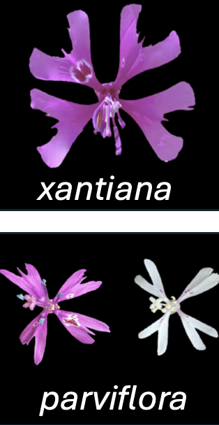

# INSERT POLINATOR OBSERVATION VIDEO Types of Variables
Motivating scenario: It is the first day of this biostatistics course. You’ve heard this before but we’re easing into the class, and getting a feel for how this book works.
Learning goals: By the end of this chapter you should be able to
1. Differentiate between categorical and numeric variables.
2. Distinguish between types of categorical (nominal, binary, ordinal) and types of numeric (continuous, discrete) variables.
3. Have a sense of why as statisticians, we must consider the type of data and variables in building models.
4. Know how to read this book - complete embedded quiz questions.

- C. xantiana ssp. xantiana (hereafter xantiana) is primarily outcrossing, with large, showy flowers that attract pollinators.
- C. xantiana ssp. parviflora (hereafter parviflora) largely self-fertilizes, with smaller (sometimes white) flowers and other floral features that encourage self-fertilization.
Although these taxa hybridize in nature, they remain quite distinct, even in areas of sympatry where they exchange genes.
Dave Moeller and his colleagues (including me) have been studying this species for decades. Their research addresses fundamental questions in evolution, such as:
- Why do some species tolerate self-fertilization, while others do not?
- How do major changes in reproductive systems evolve?
- What influences the range of a species (i.e., where a species is found in nature)?
- How do species coexist?
- What mediates the extent of gene flow between species?
- How is climate change affecting species ranges and persistence?
To answer these big and exciting questions, Dave and his collaborators must break them down into smaller, direct scientific studies that can be addressed through a combination of experiments and observations. To conduct such studies, we must map these complex ideas onto measurable variables.
For example, rather than directly comparing the flower images in Figure 1, we simplify these flowers into variables that summarize them. For instance, we could represent a flower using a set of variables such as flower color, petal length, the distance between stigma and style, etc.
Explanatory and Response Variables
Dave and his team have conducted numerous studies to tackle these big questions. In most cases, they examine how the value of a response variable — the outcome we aim to understand — changes with different values of one or more explanatory variables (also called predictor or independent variables), which are thought to influence or be associated with the biological process of interest.
Understanding the distinction between explanatory and response variables is crucial for framing hypotheses, designing experiments, and interpreting statistical results. However, this distinction often depends on how the research question is framed and can even vary within a single study. For example, in a recent study on predictors of pollinator visitation in parviflora
We first aimed to identify which loci in the genome predicted flower color and petal length in parviflora. Here, genotype was the explanatory variable, while the floral attributes (petal color and petal length) were the response variables.
We then asked whether certain floral attributes (petal color and petal length) predicted pollinator visitation to parviflora plants. In this case, the floral attributes became the explanatory variables, and pollinator visitation was the response variable.
Types of Variables
![Two vertically stacked panels show reflectance spectra for two Clarkia xantiana Recombinant Inbred Lines (RILs) differing in petal color. --- The top panel is labeled 'A109 ("white")' with white text on a black background. Several reflectance curves (percent reflectance vs. wavelength, 400–1000 nm) are plotted, generally showing higher reflectance across all wavelengths. An inset photo shows a flower with white petals and small purple markings --- The bottom panel is labeled 'A114 ("pink")' with pink text on a black background. Reflectance curves are shown, with lower reflectance overall and a pronounced dip around 550 nm, corresponding to stronger absorption in the green wavelengths. An inset photo shows a flower with bright pink petals and purple spots. Axes are labeled 'Reflectance (%)' (y-axis) and 'Wavelength (nm)' (x-axis), common across both panels.](../../figs/basics/vartype/petal_color.png)
Variables come in different flavors, and knowing the flavor of a variable is key to choosing appropriate summary statistics, data visualizations, and statistical models. Our parviflora pollinator visitation example above included both major types of variables (Figure 1):
- Numeric variables are quantitative and have magnitude. For instance, we measured pollinator visits as the number of times a pollinator visited a flower during a [5-minute observation period], and petal length in centimeters.
- Categorical variables are qualitative. In our example, flower color and genotype were treated as categorical variables.
Like much of stats – the line between these types of variables is blurry. For example, we often treat color as a category, but color can be measured quantitatively (Figure 2). So depending on our question we may want to treat color as either a numeric or categorical variable.
Not All Numbers Are Numeric. For example, a gene ID may be represented as a number, but it is an arbitrary label rather than a measurement. Similarly, in our Clarkia studies, some sites were identified by numbers (e.g., Site 22 or Site 100). However, Site 22 is not “less than” Site 100 — these are categorical variables, despite being represented numerically.
Within these two categories are further sub-flavors which allow us to further refine our statistical approach:
Types of Numeric Variables

A discrete variable: Xantiana flowers with four, five or six petals (photo courtesy of Dave Moeller).
A continuous variable: Parviflora petal whose length is being measured. Image from The University and Jepson Herbaria University of California, Berkeley. Copyright from ©2020 Chris Winchell. (image link)
Numeric variables can be categorized into two main types:
Discrete variables come in chunks. For instance, flowers receive zero, one, two, three, and so on, pollinators. Pollinators do not come in fractions, making this variable inherently discrete.
Continuous variables can take any value within a range. Classic examples include height, weight, and temperature. In our example, petal length is a continuous variable because it can be measured to any level of precision within its range.
Subtle Distinctions and Blurry Boundaries. The two cases above represent pretty clear distinctions between discrete and continuous variables, but sometimes such distinctions are more subtle.
Consider the number of pollinators—these cannot be fractional, but the number of pollinators per minute can be fractional. There are other similarly blurry cases. For example, time to first flower is inherently continuous, but we often check on flowers only once per day, so it is measured as discrete. Similarly, in human studies, age is usually reported in whole months or years (discrete), rather than on the more continuous scale of fractional seconds. In such cases, the appropriate question is not “is my data discrete or continuous?” but rather “what process generated my data? and what statistical distribution do the data follow?
Categorical variables

Categorical variables are qualitative, and include, nominal, binary, and ordinal variables.
- Nominal variables cannot be ordered and have names – like sample ID, species, study site etc…
- Binary variables are a type of nominal variable with only two options (or for which we only consider two options. Alive/dead, pass/fail, on/off are classic binary variables). In our example of pollinator visitation in parviflora, we considered only two flower colors (pink/white) so flower color in this case is binary.
- Ordinal variables can be ordered, but do not correspond to a magnitude. For example, bronze, silver and gold medals in the Olympics are ranked from best to worst, but first is not some reliable distance away from second or third etc… In our pollinator example, we often may wish to distinguish between frequent pollinators (e.g. specialist bees, Figure 4), common but less frequent pollinators (e.g. non-specialist bees), and rare/incidental pollinators (e.g. flies).
Closing Resources
Summary
Understanding the types of variables in our data can help us translate complex biological questions into measurable data that can be evaluated with the statistical tools we develop in this book. Variables can be categorized as numeric or categorical, and further subdivided into types like discrete, continuous, nominal, binary, or ordinal. These classifications influence how we summarize, visualize, analyze, and modelize our data.
Chatbot tutor
Please interact with this custom chatbot (link here) I have made to help you with this chapter. I suggest interacting with at least ten back-and-forths to ramp up and then stopping when you feel like you’ve got what you needed from it.
Practice Questions
Try the questions below!
Likert scales look like this:
- How do you feel about Clarkia?
(1) Love it
(2) Like it
(3) Don’t care
(4) Do not like
(5) Hate it
- How do you feel about Clarkia?
(1) Love it
(2) Like it
(3) Don’t care
(4) Do not like
(5) Hate it
Q1) In a species with pink or white flowers, flower color is a special kind of categorical variable known as a ___ variable
This was a little tricky! The correct answer is Binary, because there are only two possible values. If you picked either “nominal” or “bimodal,” you’re pretty close and definitely thinking along the right path, but not quite there! So let’s walk through these “not quite right” answers:
Nominal: Petal color is nominal in the sense that “pink” isn’t greater or lesser than “white”—the categories have no natural order. But because there are only two options here, the more specific (and better) description is Binary.
Bimodal: A bimodal distribution refers to a numeric variable that has two distinct peaks or clusters. If we had measured flower color quantitatively—say, by recording percent reflectance at 550 nm—and the data clustered around two values (say, “mostly pink” vs. “mostly white”), then the distribution would be bimodal. (But even then, we’d probably simplify it to binary for analysis.)
If you answered “ordinal,” you should probably take another look at the chapter—ordinal variables have a meaningful order, like “small,” “medium,” and “large.”
.
Q2) Which of these variables is best described as continuous?
Q3) The number of offspring produced by a single animal in one breeding season is:
Q4) TRUE or FALSE: Populations of Clarkia that we named 100 and 22 are numeric .
Q5) TRUE or FALSE: A variable on a “Likert scale” (see margin for details) is clearly numeric .
The word “clearly” is the key clue here. A Likert scale (like rating agreement from “Strongly disagree” to “Strongly agree”) is based on numbers (e.g., 1, 2, 3, 4, 5), but those numbers represent ordered categories, not truly continuous or clearly numeric values.
In other words, while you can treat Likert scale data like numbers sometimes (e.g., calculating averages), the numbers themselves are standing in for categories with an order—not for measured quantities along a true number line. So while you might have seen Likert data analyzed using means, t-tests, or even regressions—treating them like numeric variables—this is a common (and sometimes reasonable) modeling shortcut. Conceptually, Likert data are still clearly ordinal: they are ordered categories, not continuous measurements.
If you missed this, don’t worry — Likert scales can be a little tricky because they look numeric. But always pay close attention to what the numbers mean. If they’re just labeling ordered choices (rather than measuring something truly continuous, like height or weight), the variable is ordinal categorical, not clearly numeric.
.
Q6) The variable, kingdom (corresponding to one of the six kingdoms of life), is a ___ variable
Q7) TRUE of FALSE: A continuous variable can never be modeled as discrete and vice versa
Glossary of Terms
Variable: A characteristic or attribute that can take on different values or categories in a dataset.
Explanatory Variable: Also known as a predictor or independent variable, this is a variable that is thought to influence or explain the variation in another variable.
Response Variable: Also known as a dependent variable, this is the outcome or effect being studied, which changes in response to the explanatory variable.
Numeric Variable: A variable that represents measurable quantities and has magnitude, either as counts (discrete) or as continuous values.
Discrete Variable: A numeric variable that represents distinct, separate values or counts (e.g., number of pollinators).
Continuous Variable: A numeric variable that can take any value within a range and is measured with precision (e.g., petal length).
Categorical Variable: A variable that represents categories or groups and is qualitative in nature.
Nominal Variable: A categorical variable without an inherent order (e.g., flower species or study site).
Binary Variable: A nominal variable with only two possible categories (e.g., alive/dead, pink/white).
Ordinal Variable: A categorical variable with a meaningful order, but without measurable distances between levels (e.g., gold, silver, bronze).